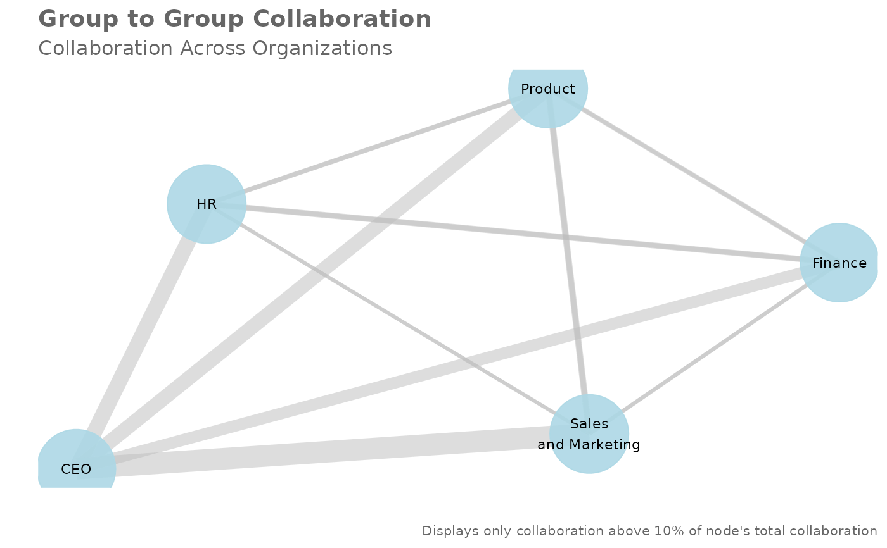
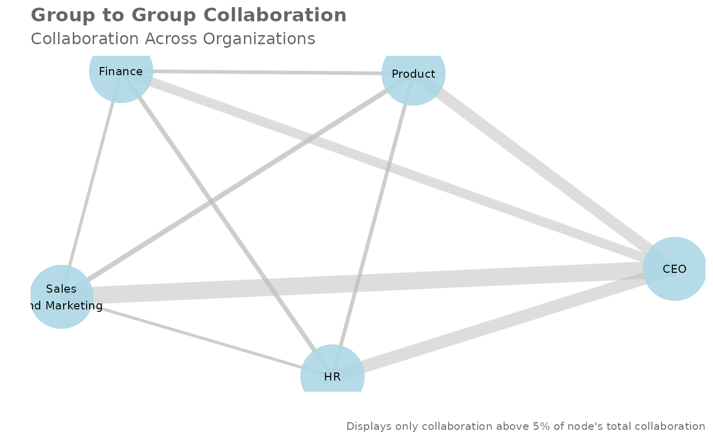
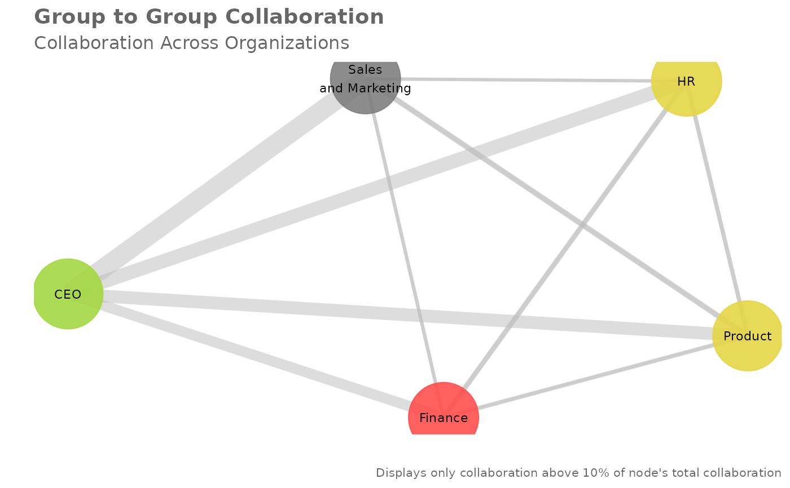

Create a network plot with the group-to-group query
network_g2g.RdPass a data frame containing a group-to-group query and return a network
plot. Automatically handles "Within Group" and "Other_collaborators"
values within query data.
Usage
network_g2g(
data,
primary = NULL,
secondary = NULL,
metric = "Group_collaboration_time_invested",
algorithm = "fr",
node_colour = "lightblue",
exc_threshold = 0.1,
org_count = NULL,
subtitle = "Collaboration Across Organizations",
return = "plot"
)Arguments
- data
Data frame containing a group-to-group query.
- primary
String containing the variable name for the Primary Collaborator column.
- secondary
String containing the variable name for the Secondary Collaborator column.
- metric
String containing the variable name for metric. Defaults to
Group_collaboration_time_invested.- algorithm
String to specify the node placement algorithm to be used. Defaults to
"fr"for the force-directed algorithm of Fruchterman and Reingold. See https://rdrr.io/cran/ggraph/man/layout_tbl_graph_igraph.html for a full list of options.- node_colour
String or named vector to specify the colour to be used for displaying nodes. Defaults to
"lightblue".If
"vary"is supplied, a different colour is shown for each node at random.If a named vector is supplied, the names must match the values of the variable provided for the
primaryandsecondarycolumns. See example section for details.
- exc_threshold
Numeric value between 0 and 1 specifying the exclusion threshold to apply. Defaults to 0.1, which means that the plot will only display collaboration above 10% of a node's total collaboration. This argument has no impact on
"data"or"table"return.- org_count
Optional data frame to provide the size of each organization in the
secondaryattribute. The data frame should contain only two columns:Name of the
secondaryattribute excluding any prefixes, e.g."Organization". Must be of character or factor type."n". Must be of numeric type. Defaults toNULL, where node sizes will be fixed.
- subtitle
String to override default plot subtitle.
- return
String specifying what to return. This must be one of the following strings:
"plot""table""network""data"
See
Valuefor more information.
Value
A different output is returned depending on the value passed to the return
argument:
"plot": 'ggplot' object. A group-to-group network plot."table": data frame. An interactive matrix of the network."network: 'igraph' object used for creating the network plot."data": data frame. A long table of the underlying data.
See also
Other Network:
g2g_data,
network_p2p(),
network_summary(),
p2p_data_sim(),
p2p_data
Examples
# Return a network plot
g2g_data %>% network_g2g()
#> `primary` field not provided. Assuming `PrimaryCollaborator_Organization` as the `primary` variable.
#> `secondary` field not provided. Assuming `SecondaryCollaborator_Organization` as the `secondary` variable.

# Return a network plot - Meeting hours and 5% threshold
network_g2g(
data = g2g_data,
primary = "PrimaryCollaborator_Organization",
secondary = "SecondaryCollaborator_Organization",
exc_threshold = 0.05
)

# Return a network plot - custom-specific colours
# Get labels of orgs and assign random colours
org_str <- unique(g2g_data$PrimaryCollaborator_Organization)
col_str <-
sample(
x = heat_colours(n = length(org_str)), # generate colour codes for each one
size = length(org_str),
replace = TRUE
)
# Create and supply a named vector to `node_colour`
names(col_str) <- org_str
g2g_data %>%
network_g2g(node_colour = col_str)
#> `primary` field not provided. Assuming `PrimaryCollaborator_Organization` as the `primary` variable.
#> `secondary` field not provided. Assuming `SecondaryCollaborator_Organization` as the `secondary` variable.

# Return a network plot with circle layout
# Vary node colours and add org sizes
org_tb <-
data.frame(
Organization = c(
"G&A East",
"G&A West",
"G&A North",
"South Sales",
"North Sales",
"G&A South"
),
n = sample(30:1000, size = 6)
)
g2g_data %>%
network_g2g(algorithm = "circle",
node_colour = "vary",
org_count = org_tb)
#> `primary` field not provided. Assuming `PrimaryCollaborator_Organization` as the `primary` variable.
#> `secondary` field not provided. Assuming `SecondaryCollaborator_Organization` as the `secondary` variable.
#> Warning: Removed 5 rows containing missing values (`geom_point()`).
# Return an interaction matrix
# Minimum arguments specified
g2g_data %>%
network_g2g(return = "table")
#> `primary` field not provided. Assuming `PrimaryCollaborator_Organization` as the `primary` variable.
#> `secondary` field not provided. Assuming `SecondaryCollaborator_Organization` as the `secondary` variable.
#> # A tibble: 5 × 7
#> PrimaryOrg Finance HR Product `Sales and Marketing` CEO
#> <chr> <dbl> <dbl> <dbl> <dbl> <dbl>
#> 1 CEO 0.210 0.247 0.236 0.307 NA
#> 2 Finance 0.570 0.152 0.142 0.133 0.00278
#> 3 HR 0.143 0.584 0.141 0.129 0.00308
#> 4 Product 0.132 0.137 0.582 0.146 0.00320
#> 5 Sales and Marketing 0.132 0.130 0.158 0.576 0.00385
#> # ℹ 1 more variable: `Unclassified Collaborators` <dbl>